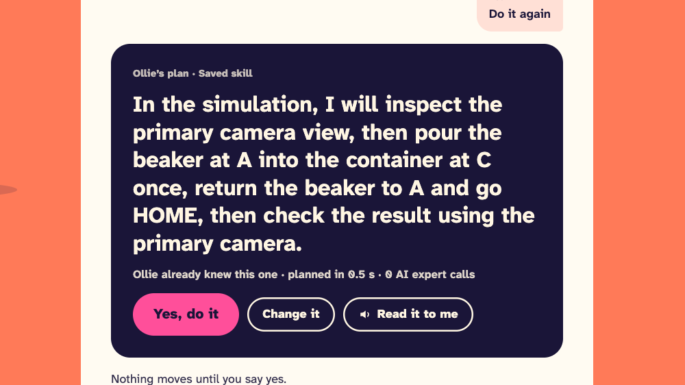

Real arm
SKITStudent in a lab coat, hands in lap. Partner grabs the beaker and pours without asking. Student: "Wait, I wanted to—"real footage goes here
ollieby OpenArms
VICTORVictor · agent and student flow: on camera, lab coat, centre framereal footage goes here
1 in 5
US undergraduates report a disability.
NCES, 2019–20
50%
of students with physical disabilities surveyed had been given passive roles in the lab.
Jeannis et al., 2019 · 107 students
You’re the scientist.
Ollie’s the hands.
Ollie app · live simulation · 1.6×
Real arm · 2×
Ollie app · live simulation · 1.6×
DUCDuc · skills: on camera, lab coat, centre framereal footage goes here
Before Ollie saves a skill, it replays it in simulation
- ✓Normal run
- ✓Beaker missing
- ✓Beakers swapped
- ✓Beaker moved
- ✓Camera blocked
- ✓Stale picture
- ✓Consent check
- ✓Stop check
Simulation
First time

New plan · 1 AI expert call
Second time

Saved skill · 0 AI expert calls
58.8 s → 0.41 s
request to exact plan, same task, new wording
6 model calls → 0 · logged MuJoCo bench run
JOSEPHJoseph · simulation: on camera, lab coat, centre framereal footage goes here
3 labs · 1 arm
Simulation
Simulation · Erupting Volcano
Simulation · Magic Potions
Simulation · Lava Lamp
STEFStefanie · hardware: on camera, lab coat, centre framereal footage goes here
Real arm
SO-101
open source · about $120 in parts · taught by hand
Real arm
Simulation · same arm model
TEAMAll four in lab coats behind the bench; the arm wavesreal footage goes here
ollieby OpenArms
Personalizes to the student. Scales to the school.
github.com/VictorJimenez3/OpenArms
“Wait, I wanted to—”
Imagine you're a student who knows exactly what to test, but can't hold the beaker.
One in five undergrads reports a disability.
In one national survey, half of students with physical disabilities were given passive roles in the lab.
Someone else had the hands, so someone else made the calls. So we built Ollie.
You just talk. Ollie looks at the bench and plans from moves we've tested on the arm.
It tells you the plan, and nothing moves until you say yes.
Then a camera checks what actually happened, and you decide what to test next.
The first time Ollie does something new, the AI reasons it out step by step.
Before it's saved, we replay it in simulation: missing, swapped and moved beakers, a blocked camera, and Stop.
Only then does it become a skill. Next time, in any words, it's one tool call.
Fifty-nine seconds down to under half a second.
Not every school can afford a robot.
So every lab also runs in a physics simulation of the same arm, straight from a twenty-dollar science kit.
Volcanoes, potions, lava lamps. Same conversation, same checks, no hardware.
Ollie is an open-source SO-101 arm, about a hundred and twenty dollars in parts.
We taught it a real pour by hand, and gave it rulers and an overhead camera so it knows where every beaker is.
Then we lined our simulator up with that recording, so what Ollie rehearses is what the real arm does.
OpenArms. It personalizes to the student and scales to the school.